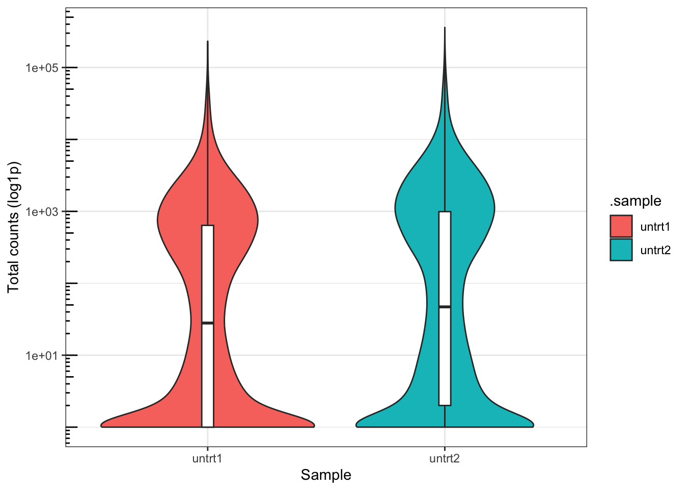
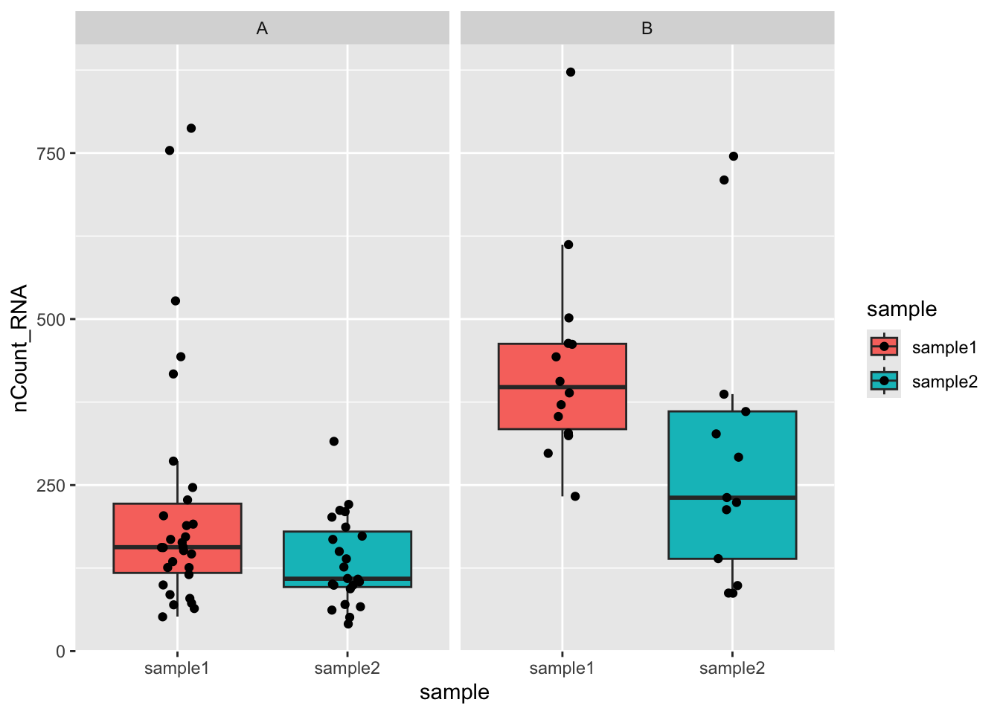

library(tidyomics)
#> ── Attaching core tidyomics packages ──────────────────────── tidyomics 1.5.0 ──
#> ✔ dplyr 1.1.4 ✔ tidyr 1.3.1
#> ✔ ggplot2 3.5.2 ✔ tidyseurat 0.8.0
#> ✔ nullranges 1.15.0 ✔ tidySingleCellExperiment 1.19.0
#> ✔ plyranges 1.29.0 ✔ tidySummarizedExperiment 1.19.0
#> ✔ tidybulk 1.21.0
#> ── Conflicts ────────────────────────────────────────── tidyomics_conflicts() ──
#> ✖ plyranges::between() masks dplyr::between()
#> ✖ tidybulk::bind_cols() masks ttservice::bind_cols(), dplyr::bind_cols()
#> ✖ plyranges::filter() masks tidybulk::filter(), dplyr::filter(), stats::filter()
#> ✖ S4Vectors::findMatches() masks utils::findMatches()
#> ✖ S4Vectors::head() masks utils::head()
#> ✖ plyranges::n() masks dplyr::n()
#> ✖ plyranges::n_distinct() masks dplyr::n_distinct()
#> ✖ IRanges::relist() masks BiocGenerics::relist(), utils::relist()
#> ✖ tidybulk::rename() masks S4Vectors::rename(), dplyr::rename()
#> ✖ plyranges::slice() masks IRanges::slice(), dplyr::slice()
#> ✖ IRanges::stack() masks S4Vectors::stack(), utils::stack()
#> ✖ S4Vectors::tail() masks utils::tail()
#> ✖ tidyseurat::tidy() masks tidySingleCellExperiment::tidy(), tidySummarizedExperiment::tidy(), generics::tidy()
#> ℹ Use the conflicted package (<http://conflicted.r-lib.org/>) to force all conflicts to become errors
pasilla_tidy <- tidySummarizedExperiment::pasilla
pasilla_tidy
#> # A SummarizedExperiment-tibble abstraction: 102,193 × 5
#> # Features=14599 | Samples=7 | Assays=counts
#> .feature .sample counts condition type
#> <chr> <chr> <int> <chr> <chr>
#> 1 FBgn0000003 untrt1 0 untreated single_end
#> 2 FBgn0000008 untrt1 92 untreated single_end
#> 3 FBgn0000014 untrt1 5 untreated single_end
#> 4 FBgn0000015 untrt1 0 untreated single_end
#> 5 FBgn0000017 untrt1 4664 untreated single_end
#> 6 FBgn0000018 untrt1 583 untreated single_end
#> 7 FBgn0000022 untrt1 0 untreated single_end
#> 8 FBgn0000024 untrt1 10 untreated single_end
#> 9 FBgn0000028 untrt1 0 untreated single_end
#> 10 FBgn0000032 untrt1 1446 untreated single_end
#> # ℹ 40 more rowsHow to use tidy principles for RNA-seq data analysis
2025-06-17
Source:vignettes/how-to-use-tidy-principles-for-rna-seq-analysis.qmd
Bioconductor packages used in this document
How to manipulate SummarizedExperiment objects with tidy principles
For illustration, we use data from the tidySummarizedExperiment package (included in the meta-package tidyomics).
How pasilla_tidy object is printed is controlled by the tidySummarizedExperiment package, and by default it is displayed as a tibble-like object. Note that this behavior can be changed by setting the options(restore_SummarizedExperiment_show = TRUE) option.
# Turn off the tibble visualisation
options("restore_SummarizedExperiment_show" = TRUE)
pasilla_tidy
#> class: SummarizedExperiment
#> dim: 14599 7
#> metadata(0):
#> assays(1): counts
#> rownames(14599): FBgn0000003 FBgn0000008 ... FBgn0261574 FBgn0261575
#> rowData names(0):
#> colnames(7): untrt1 untrt2 ... trt2 trt3
#> colData names(2): condition type
# Turn on the tibble visualisation
options("restore_SummarizedExperiment_show" = FALSE)
pasilla_tidy
#> # A SummarizedExperiment-tibble abstraction: 102,193 × 5
#> # Features=14599 | Samples=7 | Assays=counts
#> .feature .sample counts condition type
#> <chr> <chr> <int> <chr> <chr>
#> 1 FBgn0000003 untrt1 0 untreated single_end
#> 2 FBgn0000008 untrt1 92 untreated single_end
#> 3 FBgn0000014 untrt1 5 untreated single_end
#> 4 FBgn0000015 untrt1 0 untreated single_end
#> 5 FBgn0000017 untrt1 4664 untreated single_end
#> 6 FBgn0000018 untrt1 583 untreated single_end
#> 7 FBgn0000022 untrt1 0 untreated single_end
#> 8 FBgn0000024 untrt1 10 untreated single_end
#> 9 FBgn0000028 untrt1 0 untreated single_end
#> 10 FBgn0000032 untrt1 1446 untreated single_end
#> # ℹ 40 more rowsThe pasilla_tidy object is a SummarizedExperiment object, and the tidySummarizedExperiment packages adds an invisible layer to abstract the SE object as a tibble. This allows us to use the dplyr package to manipulate the data, and eventually to directly plug data flow into ggplot2 for visualization.
pasilla_tidy |>
filter(condition == "untreated", type == "single_end") |>
select(-type) |>
group_by(.feature, .sample) |>
summarise(tot_counts = sum(counts)) |>
ggplot(aes(x = .sample, y = tot_counts+1, fill = .sample)) +
geom_violin() +
geom_boxplot(outliers = FALSE, width = 0.05, fill = "white") +
scale_y_log10() +
annotation_logticks(side = 'l') +
labs(x = "Sample", y = "Total counts (log1p)") +
theme_bw()
#> tidySummarizedExperiment says: A data frame is returned for independent data analysis.
#> `summarise()` has grouped output by '.feature'. You can override using the
#> `.groups` argument.
Because these tidy methods are defined for SummarizedExperiment objects, most classes built on top of SummarizedExperiment, such as DESeqDataSet or SingleCellExperiment, can also be manipulated with tidy principles. This has prompted the development of other packages (included in the tidyomics meta-package) that extend the tidy principles to other analyses, such as single-cell transcriptomics analysis.
data(pbmc_small, package="tidySingleCellExperiment")
pbmc_small
#> # A SingleCellExperiment-tibble abstraction: 80 × 17
#> # [90mFeatures=230 | Cells=80 | Assays=counts, logcounts[0m
#> .cell orig.ident nCount_RNA nFeature_RNA RNA_snn_res.0.8 letter.idents groups
#> <chr> <fct> <dbl> <int> <fct> <fct> <chr>
#> 1 ATGC… SeuratPro… 70 47 0 A g2
#> 2 CATG… SeuratPro… 85 52 0 A g1
#> 3 GAAC… SeuratPro… 87 50 1 B g2
#> 4 TGAC… SeuratPro… 127 56 0 A g2
#> 5 AGTC… SeuratPro… 173 53 0 A g2
#> 6 TCTG… SeuratPro… 70 48 0 A g1
#> 7 TGGT… SeuratPro… 64 36 0 A g1
#> 8 GCAG… SeuratPro… 72 45 0 A g1
#> 9 GATA… SeuratPro… 52 36 0 A g1
#> 10 AATG… SeuratPro… 100 41 0 A g1
#> # ℹ 70 more rows
#> # ℹ 10 more variables: RNA_snn_res.1 <fct>, file <chr>, ident <fct>,
#> # PC_1 <dbl>, PC_2 <dbl>, PC_3 <dbl>, PC_4 <dbl>, PC_5 <dbl>, tSNE_1 <dbl>,
#> # tSNE_2 <dbl>
## We can still manipulate the data with standard SummarizedExperiment methods
counts(pbmc_small)[1:5, 1:4]
#> 5 x 4 sparse Matrix of class "dgCMatrix"
#> ATGCCAGAACGACT CATGGCCTGTGCAT GAACCTGATGAACC TGACTGGATTCTCA
#> MS4A1 . . . .
#> CD79B 1 . . .
#> CD79A . . . .
#> HLA-DRA . 1 . .
#> TCL1A . . . .
## But we can also use tidy principles
pbmc_small |>
extract(file, "sample", "../data/([a-z0-9]+)/outs.+") |>
rename(annotation = letter.idents) |>
ggplot(aes(sample, nCount_RNA, fill=sample)) +
geom_boxplot(outlier.shape=NA) +
geom_jitter(width=0.1) +
facet_wrap( ~ annotation)
To read more about the tidyomics packages, please refer to the tidyomics GitHub organization page.
Session info
Click to display session info
sessionInfo()
#> R version 4.5.1 (2025-06-13)
#> Platform: x86_64-apple-darwin20
#> Running under: macOS Ventura 13.7.6
#>
#> Matrix products: default
#> BLAS: /Library/Frameworks/R.framework/Versions/4.5-x86_64/Resources/lib/libRblas.0.dylib
#> LAPACK: /Library/Frameworks/R.framework/Versions/4.5-x86_64/Resources/lib/libRlapack.dylib; LAPACK version 3.12.1
#>
#> locale:
#> [1] en_US.UTF-8/en_US.UTF-8/en_US.UTF-8/C/en_US.UTF-8/en_US.UTF-8
#>
#> time zone: UTC
#> tzcode source: internal
#>
#> attached base packages:
#> [1] stats4 stats graphics grDevices utils datasets methods
#> [8] base
#>
#> other attached packages:
#> [1] nullranges_1.15.0 plyranges_1.29.0
#> [3] tidybulk_1.21.0 tidyseurat_0.8.0
#> [5] SeuratObject_5.1.0 sp_2.2-0
#> [7] tidySingleCellExperiment_1.19.0 SingleCellExperiment_1.31.0
#> [9] tidySummarizedExperiment_1.19.0 ttservice_0.4.1
#> [11] SummarizedExperiment_1.39.0 Biobase_2.69.0
#> [13] GenomicRanges_1.61.0 GenomeInfoDb_1.45.4
#> [15] IRanges_2.43.0 S4Vectors_0.47.0
#> [17] BiocGenerics_0.55.0 generics_0.1.4
#> [19] MatrixGenerics_1.21.0 matrixStats_1.5.0
#> [21] ggplot2_3.5.2 tidyr_1.3.1
#> [23] dplyr_1.1.4 tidyomics_1.5.0
#> [25] BiocStyle_2.37.0
#>
#> loaded via a namespace (and not attached):
#> [1] RcppAnnoy_0.0.22 splines_4.5.1 later_1.4.2
#> [4] BiocIO_1.19.0 bitops_1.0-9 tibble_3.3.0
#> [7] polyclip_1.10-7 preprocessCore_1.71.0 XML_3.99-0.18
#> [10] fastDummies_1.7.5 lifecycle_1.0.4 globals_0.18.0
#> [13] lattice_0.22-7 MASS_7.3-65 magrittr_2.0.3
#> [16] plotly_4.10.4 rmarkdown_2.29 yaml_2.3.10
#> [19] httpuv_1.6.16 Seurat_5.3.0 sctransform_0.4.2
#> [22] spam_2.11-1 spatstat.sparse_3.1-0 reticulate_1.42.0
#> [25] cowplot_1.1.3 pbapply_1.7-2 RColorBrewer_1.1-3
#> [28] abind_1.4-8 Rtsne_0.17 purrr_1.0.4
#> [31] RCurl_1.98-1.17 ggrepel_0.9.6 irlba_2.3.5.1
#> [34] listenv_0.9.1 spatstat.utils_3.1-4 goftest_1.2-3
#> [37] RSpectra_0.16-2 spatstat.random_3.4-1 fitdistrplus_1.2-2
#> [40] parallelly_1.45.0 codetools_0.2-20 DelayedArray_0.35.1
#> [43] tidyselect_1.2.1 UCSC.utils_1.5.0 farver_2.1.2
#> [46] spatstat.explore_3.4-3 GenomicAlignments_1.45.0 jsonlite_2.0.0
#> [49] ellipsis_0.3.2 progressr_0.15.1 ggridges_0.5.6
#> [52] survival_3.8-3 tools_4.5.1 ica_1.0-3
#> [55] Rcpp_1.0.14 glue_1.8.0 gridExtra_2.3
#> [58] SparseArray_1.9.0 xfun_0.52 withr_3.0.2
#> [61] BiocManager_1.30.25 fastmap_1.2.0 fansi_1.0.6
#> [64] digest_0.6.37 R6_2.6.1 mime_0.13
#> [67] scattermore_1.2 tensor_1.5 spatstat.data_3.1-6
#> [70] utf8_1.2.6 data.table_1.17.6 rtracklayer_1.69.0
#> [73] InteractionSet_1.37.0 httr_1.4.7 htmlwidgets_1.6.4
#> [76] S4Arrays_1.9.1 uwot_0.2.3 pkgconfig_2.0.3
#> [79] gtable_0.3.6 lmtest_0.9-40 XVector_0.49.0
#> [82] htmltools_0.5.8.1 dotCall64_1.2 scales_1.4.0
#> [85] png_0.1-8 spatstat.univar_3.1-3 knitr_1.50
#> [88] tzdb_0.5.0 reshape2_1.4.4 rjson_0.2.23
#> [91] nlme_3.1-168 curl_6.3.0 zoo_1.8-14
#> [94] stringr_1.5.1 KernSmooth_2.23-26 parallel_4.5.1
#> [97] miniUI_0.1.2 restfulr_0.0.15 pillar_1.10.2
#> [100] grid_4.5.1 vctrs_0.6.5 RANN_2.6.2
#> [103] promises_1.3.3 xtable_1.8-4 cluster_2.1.8.1
#> [106] evaluate_1.0.3 readr_2.1.5 cli_3.6.5
#> [109] compiler_4.5.1 Rsamtools_2.25.0 rlang_1.1.6
#> [112] crayon_1.5.3 future.apply_1.20.0 labeling_0.4.3
#> [115] plyr_1.8.9 stringi_1.8.7 viridisLite_0.4.2
#> [118] deldir_2.0-4 BiocParallel_1.43.3 Biostrings_2.77.1
#> [121] lazyeval_0.2.2 spatstat.geom_3.4-1 Matrix_1.7-3
#> [124] RcppHNSW_0.6.0 hms_1.1.3 patchwork_1.3.0
#> [127] future_1.58.0 shiny_1.10.0 ROCR_1.0-11
#> [130] igraph_2.1.4